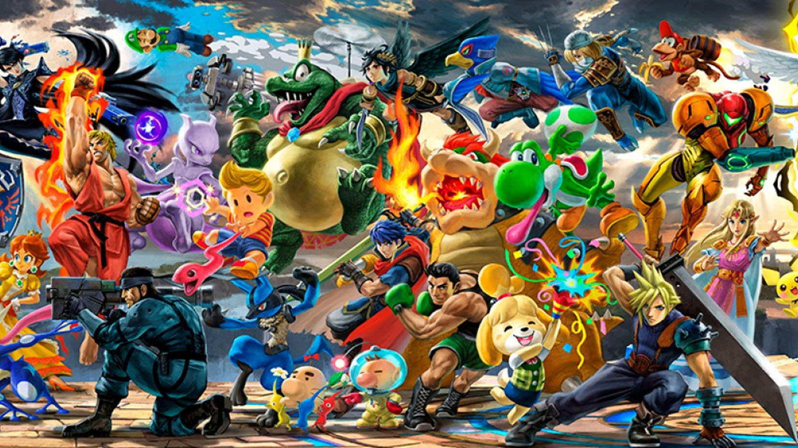

Los 5 juegos más vendidos de la historia

Minecraft
Con más de 200 millones de copias vendidas desde su lanzamiento en 2011, Minecraft es el juego más vendido de la historia. Un lugar que ocupa desde no hace mucho, porque superó hace poco al segundo en esta lista.

Tetris
Tetris (1984) es el juego de puzles por antonomasia. Un símbolo de los videojuegos y que cuenta con multitud de adaptaciones y nuevas versiones. Uno de esos clásicos a los que siempre volvemos y que, a día de hoy, ha vendido más de 170 millones de copias.

Grand theft Auto V
El tercer videojuego más vendido de la historia es la quinta entrega de la franquicia de Rockstar. Un juego que nos ha acompañado ya en tres generaciones de consolas distintas y que, cada año, sigue estando en las listas de juegos más vendidos. En este top, Grand Theft Auto V (2013) obtiene el bronce con más de 130 millones de copias vendidas.

Wii sports
Nintendo supo ver el potencial de los juegos familiares y cooperativos antes que nadie. Wii Sports (2006) es eso y, además, acompañaba a una de las consolas más vendidas de la compañía Nintendo. Este juego ocupa el cuarto lugar de este top con unas cifras de ventas que superan los 82 millones de copias

PlayerUnknown’s Battlegrounds
Un juego que comenzó su desarrollo como si fuese un título independiente más pero que alcanzó cotas de popularidad que sus creadores ni se esperaban. Un juego que revolucionó los juegos competitivos y asentó las bases de lo que conocemos como Battle Royale. PlayerUnknown’s Battlegrounds (2016) ocupa el quinto puesto en el top de videojuegos más vendidos de la historia con nada menos que 60 millones de copias vendidas.
Como contactarnos:
Correo: Contacto@gmail.com
Redes sociales